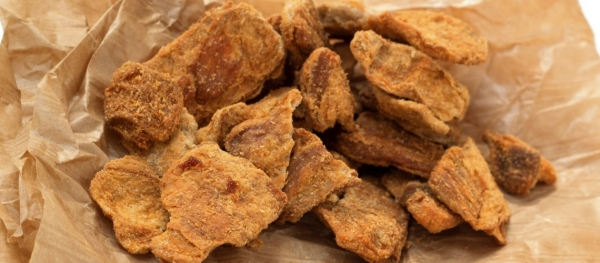

I CICCIOLI
FORMAGGI E CONTORNI

- Descrizione
- I ciccioli sono un prodotto alimentare ottenuto dalla lavorazione del grasso del maiale nella preparazione dello strutto.
- I ciccioli sono un alimento supercalorico che, nella tradizione contadina, rappresentava un ottimo pasto, in unione alla polenta. Ora si utilizzano soprattutto per accompagnare aperitivi ed antipasti. Sbriciolati rendono più gustose focacce, pane, e poenta e osei. In particolare in Irpinia viene fatta una pagnotta che nell'impasto contiene appunto i ciccioli, detta anche pizza pe frittole o pane con le cicole
- Preparazione
- Il grasso viene tagliato in piccole parti e viene messo a cuocere su fuoco lento così da far fondere la parte grassa e consentire l'evaporazione dell'acqua contenuta. Quando i pezzi di grasso hanno acquistato un colore giallastro vengono versati in un canovaccio, spremuti e infine insaporiti con l'aggiunta di aromi, che possono essere chiodo di garofano, cannella, pepe, noce moscata o altro, in dosi e proporzioni variabili a seconda del salumaio che li prepara. A volte vengono salati. La parte colata è lo strutto, la parte solida residua sono i ciccioli. Dopo la torchiatura i ciccioli possono essere lasciati in formella oppure sbriciolati a caldo. Si conservano fino a due mesi. In Calabria, ove il nome più comunemente usato è curcuci, la preparazione è diversa. Sono la parte residua nella bolliture delle frittole[1], cioè di tutte le parti del maiale non usate per gli insaccati o per il lardo secco, unitamente ad una parte di grasso, ossia di sugna, che si liquefa nella predetta bollitura.
Torna alla pagina iniziale
by Bartoli Matteo